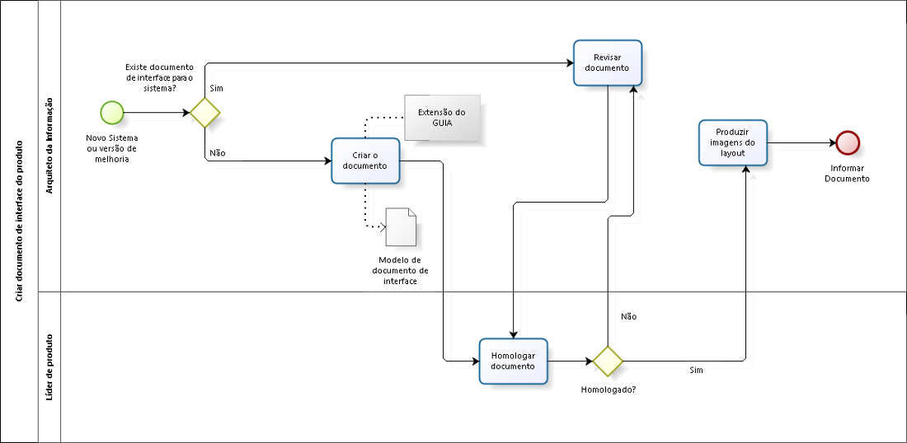

GUIA
Guia de Usabilidade e Interface de Aplicações da DITEC
Gedvan Pereira Dias (gedvan@tjpb.jus.br) / Herbet Ferreira Rodrigues (herbet@tjpb.jus.br)
TJPB
Quem Somos
- Tribunal de Justiça da Paraíba
- Diretoria de Tecnologia da Informação - DITEC
- Gerência de Atendimento
- Gerência de Desenvolvimento de TI
- Gerência de Sistemas
- Gerência de Suporte
Gerência de Sistemas
- Arquitetura e Sustentação
- Banco de Dados
- Configuração
- Portais e Usabilidade
- Requisitos
- Teste e Qualidade
Grupo de Portais e Usabilidade
- Equipe atual:
- 2 Analistas, 1 Técnico, 1 Terceirizado, 1 Estagiário
- Responsabilidades:
- Usabilidade e Interface de todos os sistemas
- Desenvolvimento completo dos portais institucionais
- TJPB, Corregedoria, Ouvidoria, ESMA, Conciliação, Memorial Virtual
Situação Anterior
- Cada projeto implementava uma interface de maneira diferente
- Ausência de consistência nas Interfaces
- Não existia uma padrão de navegação das telas, cores, iconografia, entre outros
Sistemas Antigos
↓


Solução
- Identidade visual padronizada
- Experiência do usuário aprimorada
- Agilidade no desenvolvimento
- Documentação
- Comunicação com a Fábrica de Software
- Testes de Interface
O GUIA
- Acrônimo para Guia de Usabilidade e Interface de Aplicações;
- Objetivo: Definir os padrões de interface, identidade visual e usabilidade das aplicações da DITEC;
O GUIA
- O GUIA é composto por uma série de Requisitos Não-Funcionais relacionados à Usabilidade e à Interface com o usuário;
- Representados pela sigla RIU (Requisito de Interface e Usabilidade)
- O GUIA foi documentado dentro do Sistema de Documentação Online da GESIS (DOCSIS)
- Desenvolvido pela nossa equipe
- Utiliza o CMS Drupal
GUIA
Processo de Desenvolvimento
Documento de Interface do Produto
- Elencar os Requisitos de Interface e Usabilidade (RIUs) do GUIA utilizados pelo sistema.
- Definir os elementos de Identidade Visual específicos:
- Logotipo;
- Paleta de cores;
- Layout;
- Telas públicas
Exemplos de DIP
Implementação de Referência do GUIA
- Conjunto de páginas demonstrativas de todos os componentes e elementos descritos no GUIA.
- Tecnologias utilizadas:
- Bootstrap (HTML, CSS, JavaScript)
- LESS
- Implementação de Referência
Desenvolvimento
Demonstração do código-fonte
Próximas Versões
- Guia de Acessibilidade
- WCAG
- e-MAG
- Responsividade para os sistemas
- Novo layout responsivo